For our big data project, my group and I analysed the used car market dynamics in Singapore by looking at the factors that affect the price of a used car and their significance.
Web Scraping
We collected our dataset by web-scraping from sgCarMart’s website. This is to obtain the latest information of the car market, ensuring that we maintain control over data quality and the dataset’s reliability.
Data Transformation & Wrangling
We proceed to data transformations and wrangling to clean our current data, making sure that most the variables in our dataset could be of use to us instead of just eliminating them.
First, we removed irrelevant variables such as index and CATEGORIES as they do not provide any new information that other columns were not already providing.
Secondly, we created new variables from existing columns. We saw that there were >50 unique brands and some of them only had 1-2 observations. Thus, we created BRAND_CATEGORY from columns BRAND and MODEL_SUBMODEL, grouping these observations into categories such as Exotic, Luxury and Budget brands. This helps us in ensuring that the data is representative of the types of brand.
We also created variables DAYS_OF_COE_LEFT, FEATURE_COUNT, AGE_SINCE_MANUFACTURED, ACCESSORIES_COUNT, DAYS_SINCE_REGISTERED and NUM_PAST_OWNERS to utilise the existing columns better.
Finally, we converted our final dataframe to a parquet file, to increase the optimisation of working with big data.
Data Visualisation & Exploratory Data Analysis
Afterwards, I carried out data visualisations & exploratory data analysis. Plotting a correlation matrix between the numerical variables, I saw that variables ARF and OMV, variables ROAD_TAX, POWER and ENGINE_CAPACITY_CC have a high correlation.
ROAD_TAX and POWER as they are functions of ENGINE_CAPACITY_CC
DEPRE_VAL and DEREG_VAL as they are derived from OMV
DESCRIPTION as we did not extract any data from it for our model
BRAND as we have already created BRAND_CATEGORY
MODEL_SUBMODEL as we have existing columns that have sufficient information
Final Dataset Features
CURB_WEIGHT_KG
OMV
COE_LISTED:
ENGINE_CAPACITY_CC
DAYS_OF_COE_LEFT
MILEAGE_KM
FEATURE_COUNT
ACCESSORIES_COUNT
AGE_SINCE_MANUFACTURED
NO_OF_OWNERS
DAYS_SINCE_REGISTERED
TYPE
TRANSMISSION
BRAND_CATEGORY
We then plot correlation plots, raster plots and bar plots with the final variables.
Correlation Plots Between Final Variables
We see that variables CURB_WEIGHT_KG, OMV, COE_LISTED, ENGINE_CAPACITY_CC, DAYS_OF_COE_LEFT have a positive relationship with PRICE while variables MILEAGE_KM, FEATURE_COUNT, ACCESSORIES_COUNT, AGE_SINCE_MANUFACTURED, NO_OF_OWNERS and DAYS_SINCE_REGISTERED have a negative relationship with PRICE.
df_second |>dbplot_raster(x = MILEAGE_KM, y = PRICE, fill =n(), resolution =10) +scale_x_continuous("Mileage in Thousands Kilometre", breaks =seq(0, 2000000, by =100000),labels = scales::comma_format(scale =1e-3)) +scale_y_continuous("Price in Millions",breaks =seq(0, 3000000, by =500000),labels = scales::comma_format(scale =1e-6))
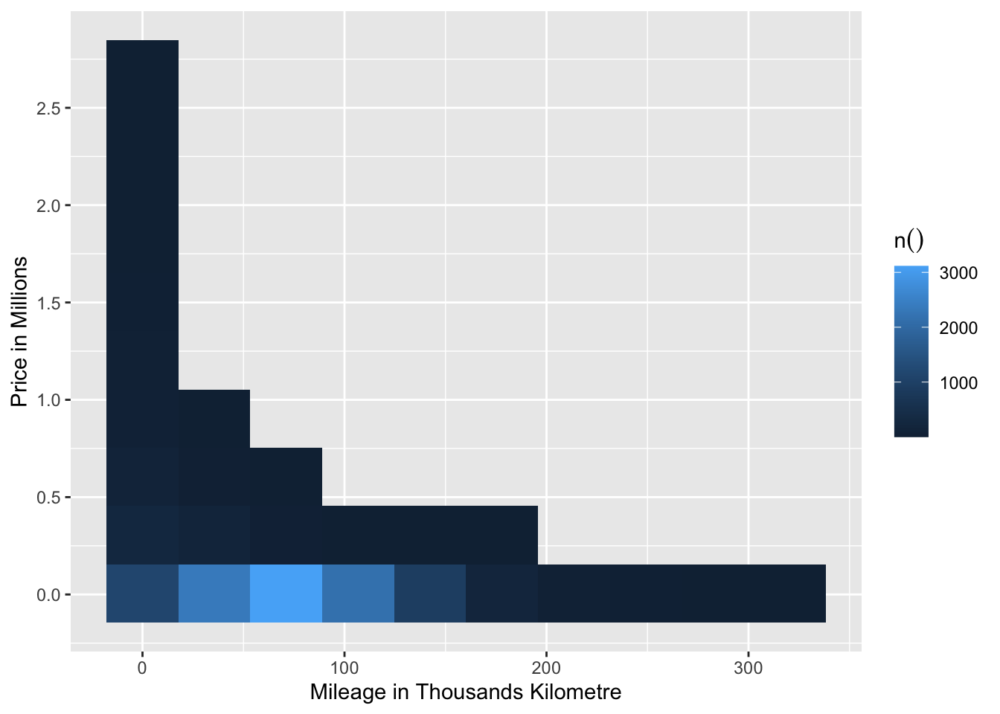
# PRICE against NUM_PAST_OWNERSdf_second |>dbplot_raster(x = NUM_PAST_OWNERS, y = PRICE, fill =n(), resolution =10) +scale_x_continuous("Number of Owners") +scale_y_continuous("Price in Millions",breaks =seq(0, 3000000, by =500000),labels = scales::comma_format(scale =1e-6))
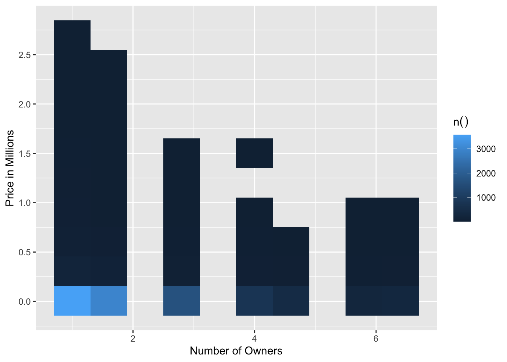
# PRICE against OMVdf_second |>dbplot_raster(x = OMV, y = PRICE, fill =n(), resolution =10) +scale_x_continuous("Open Market Value in Thousands", breaks =seq(0, 2000000, by =100000),labels = scales::comma_format(scale =1e-3)) +scale_y_continuous("Price in Millions",breaks =seq(0, 3000000, by =500000),labels = scales::comma_format(scale =1e-6))
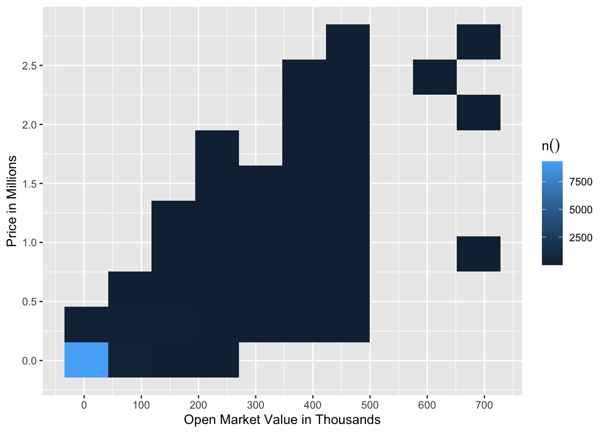
# PRICE against COE_LISTEDdf_second |>dbplot_raster(x = COE_LISTED, y = PRICE, fill =n(), resolution =10) +scale_x_continuous("COE Listed") +scale_y_continuous("Price in Millions",breaks =seq(0, 3000000, by =500000),labels = scales::comma_format(scale =1e-6))
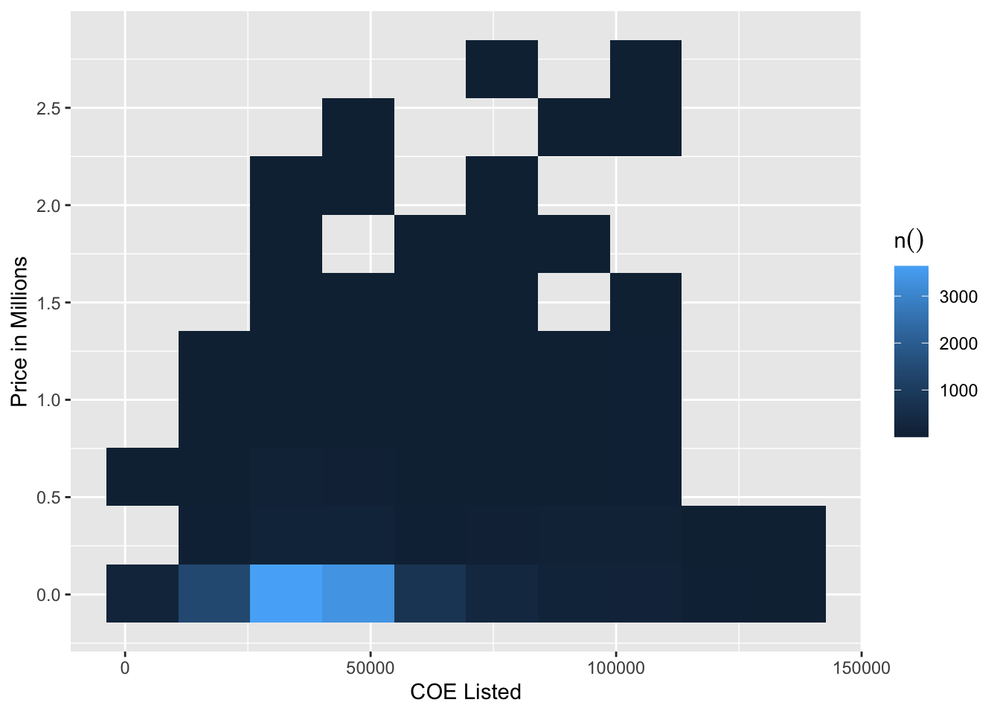
# PRICE against ENGINE_CAPACITY_CCdf_second |>dbplot_raster(x = ENGINE_CAPACITY_CC, y = PRICE, fill =n(), resolution =10) +scale_x_continuous("Engine Capacity") +scale_y_continuous("Price in Millions",breaks =seq(0, 3000000, by =500000),labels = scales::comma_format(scale =1e-6))
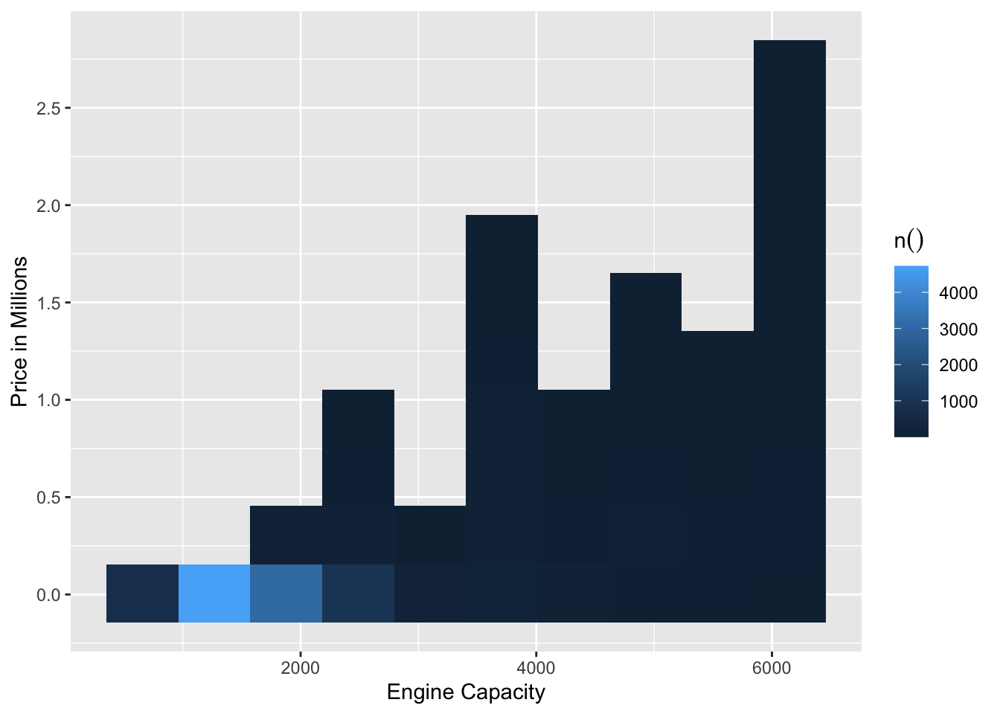
# PRICE against CURB_WEIGHT_KGdf_second |>dbplot_raster(x = CURB_WEIGHT_KG, y = PRICE, fill =n(), resolution =10) +scale_x_continuous("Curb Weight in Kilograms") +scale_y_continuous("Price in Millions",breaks =seq(0, 3000000, by =500000),labels = scales::comma_format(scale =1e-6))
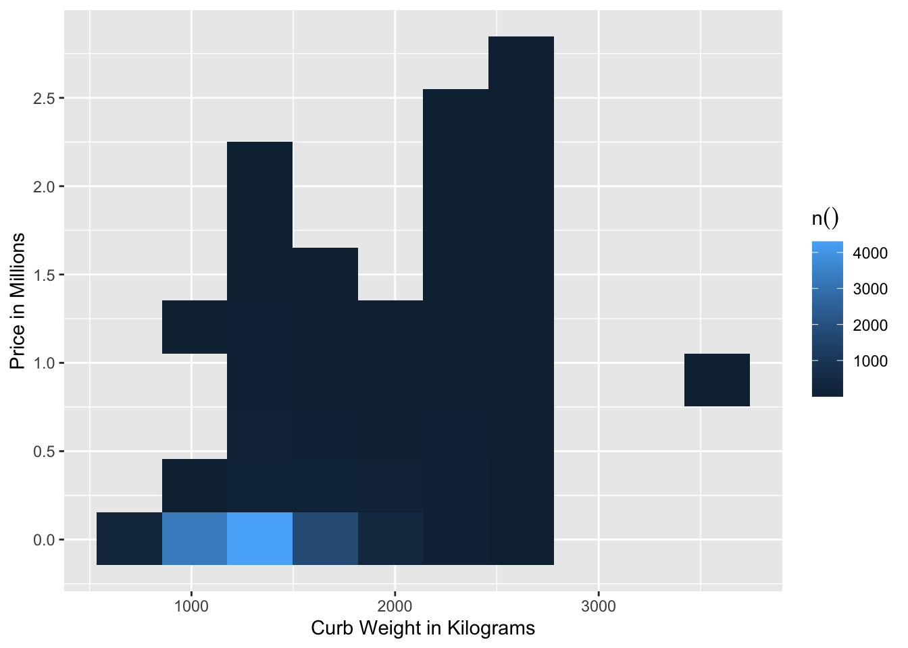
# PRICE against DAYS_OF_COE_LEFTdf_second |>dbplot_raster(x = DAYS_OF_COE_LEFT, y = PRICE, fill =n(), resolution =10) +scale_x_continuous("Days of COE Left") +scale_y_continuous("Price in Millions",breaks =seq(0, 3000000, by =500000),labels = scales::comma_format(scale =1e-6))
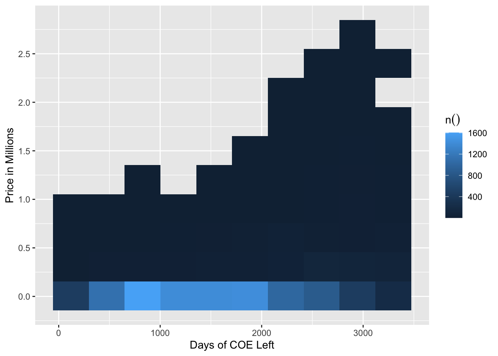
# PRICE against FEATURE_COUNTdf_second |>dbplot_raster(x = FEATURE_COUNT, y = PRICE, fill =n(), resolution =10) +scale_x_continuous("Number of Features") +scale_y_continuous("Price in Millions",breaks =seq(0, 3000000, by =500000),labels = scales::comma_format(scale =1e-6))
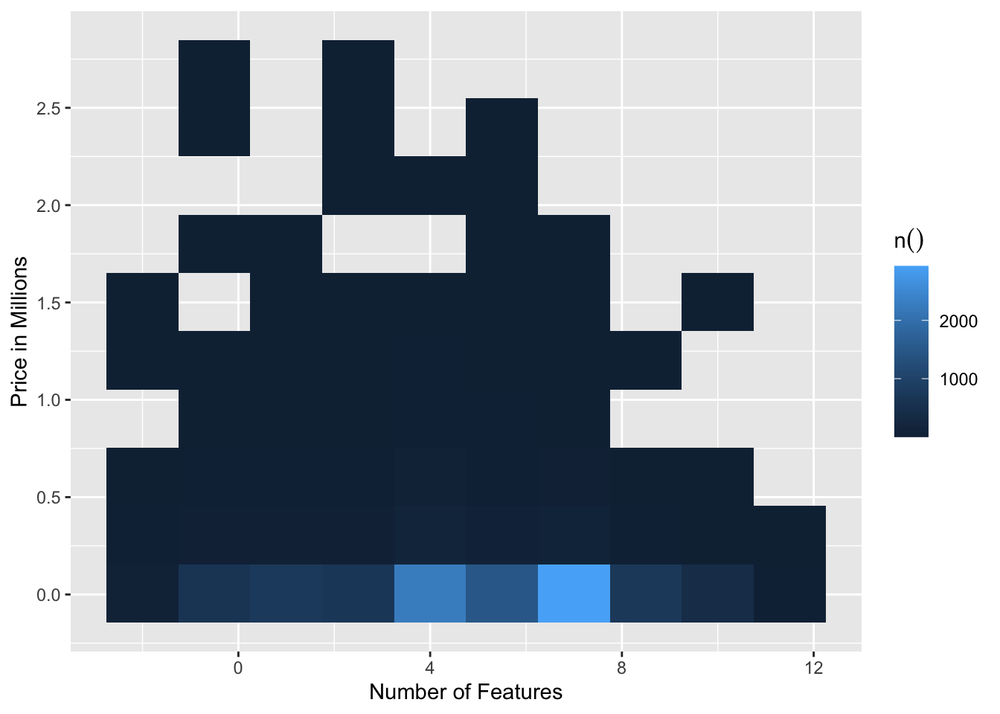
# PRICE against ACCESSORIES_COUNTdf_second |>dbplot_raster(x = ACCESSORIES_COUNT, y = PRICE, fill =n(), resolution =10) +scale_x_continuous("Number of Accessories") +scale_y_continuous("Price in Millions",breaks =seq(0, 3000000, by =500000),labels = scales::comma_format(scale =1e-6))
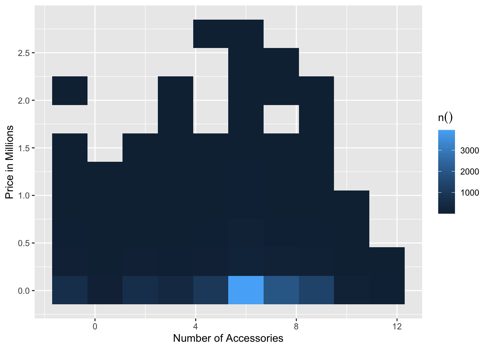
# PRICE against AGE_SINCE_MANUFACTUREDdf_second |>dbplot_raster(x = AGE_SINCE_MANUFACTURED, y = PRICE, fill =n(), resolution =10) +scale_x_continuous("Car's age since manufactured") +scale_y_continuous("Price in Millions",breaks =seq(0, 3000000, by =500000),labels = scales::comma_format(scale =1e-6))
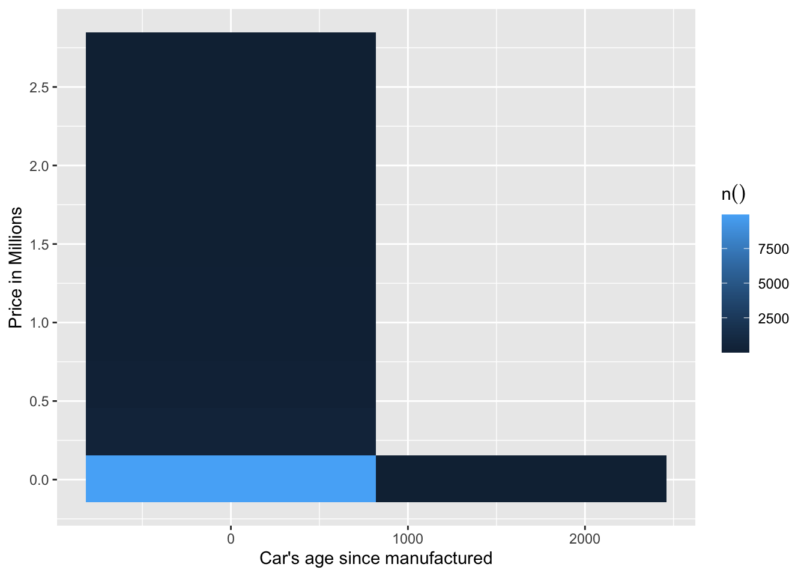
# PRICE against DAYS_SINCE_REGISTEREDdf_second |>dbplot_raster(x = DAYS_SINCE_REGISTERED, y = PRICE, fill =n(), resolution =10) +scale_x_continuous("Number of days since car is registered") +scale_y_continuous("Price in Millions",breaks =seq(0, 3000000, by =500000),labels = scales::comma_format(scale =1e-6))
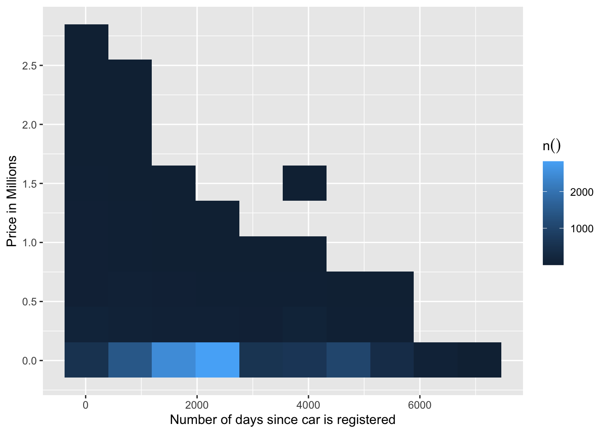
Bar Plots for character variables
df_chr <- df |>select(PRICE, TYPE, TRANSMISSION, BRAND_CATEGORY) |>collect()# PRICE against BRAND CATEGORYggplot(df_chr, aes(x = BRAND_CATEGORY, y = PRICE)) +geom_bar(fill ="orange", stat ="summary", fun ="mean") +labs(x ="Category of Car Brands", y ="Average Price in Thousands") +scale_y_continuous(breaks =seq(0, 2000000, by =100000),labels = scales::comma_format(scale =1e-3))
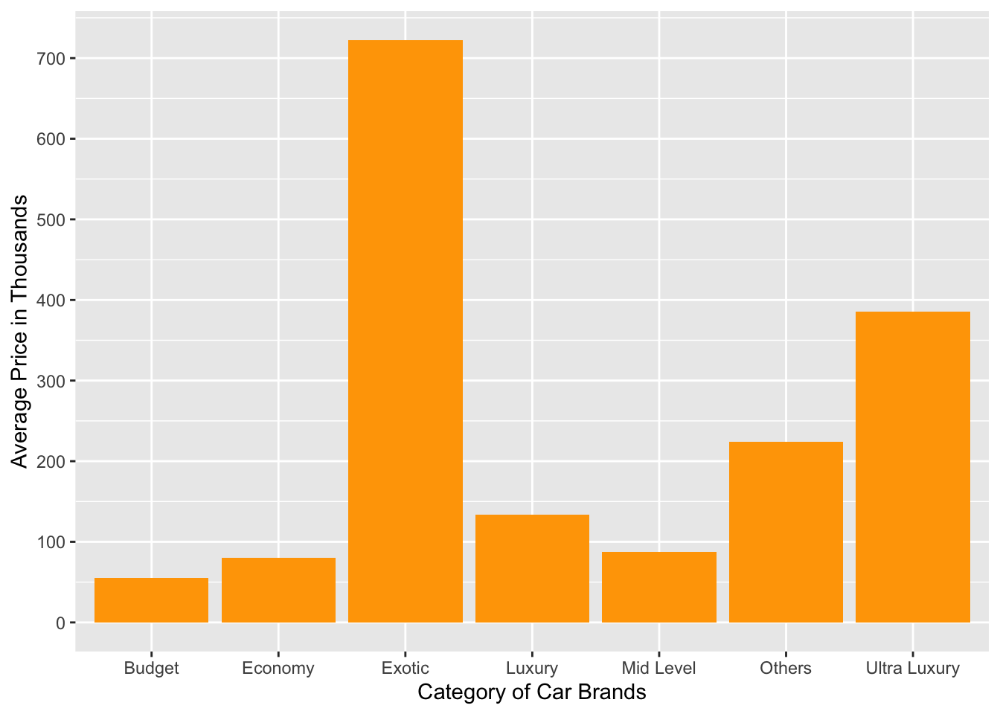
# PRICE against TYPEggplot(df_chr, aes(x = TYPE, y = PRICE)) +geom_bar(fill ="orange", stat ="summary", fun ="mean") +labs(x ="Car Types", y ="Average Price in Thousands") +scale_y_continuous(breaks =seq(0, 2000000, by =100000),labels = scales::comma_format(scale =1e-3))
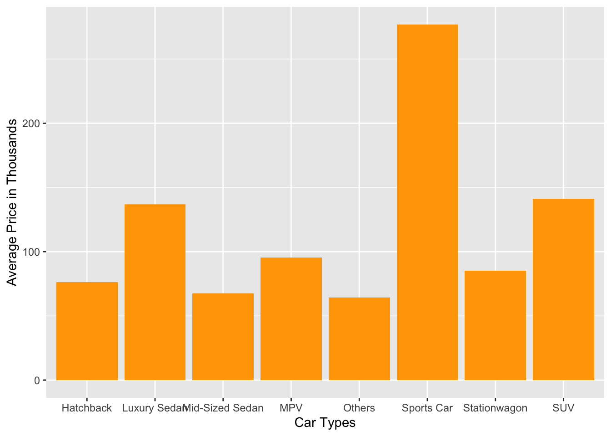
# PRICE against TRANSMISSIONggplot(df_chr, aes(x = TRANSMISSION, y = PRICE)) +geom_bar(fill ="orange", stat ="summary", fun ="mean") +labs(x ="Car Transmission", y ="Average Price in Thousands")
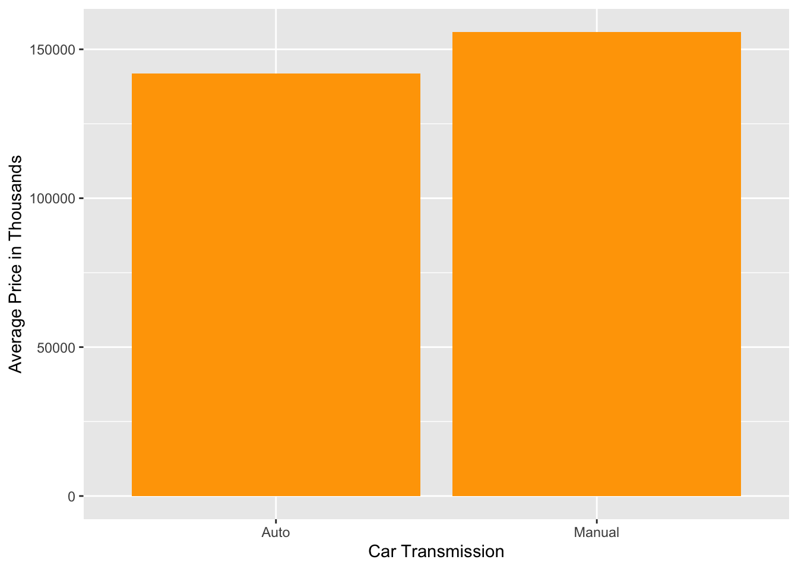
Modelling
Building a pipeline model, we initialised an empty pipeline ml_pipeline() and used functions ft_vector_assembler(), ft_standard_scaler(), ft_string_indexer() and ml_linear_regression() to combine our variables, standardising them, convert the strings value to index and combine all the variables again into a single row vector to apply linear regression.
Splitting into training & testing set
We then split our dataset into a training and testing set. To make the split reproducible, we included the seed argument.
Using the ml_fit() function, we convert our earlier pipeline, an estimator object, to a transformer.
Cross-Validation
We tried out different model specifications by defining a cross-validator, by setting elastic_net_param to a vector of values 0 and 1 to evaluate the Ridge and Lasso models with lambda values 0.1, 0.005 and 0.001 and setting number of folds to 10 to carry out a 10-fold cross validation.
We utilised ml_fit() once again to fit our model with df_train and ml_predict() to select the best model. Our best model is
PRICE = 13975.081(MILEAGE_KM) + 2263.033(CURB_WEIGHT_KG) + 185926.974(OMV) + 728.829(COE_LISTED) - 16574.058(ENGINE_CAPACITY_CC) -99.682(AGE_SINCE_MANUFACTURED) - 52920.730(DAYS_SINCE_REGISTERED) -9742.942(NUM_PAST_OWNERS) + 26257.671(DAYS_OF_COE_LEFT) -2353.743(FEATURE_COUNT) - 1024.575(ACCESSORIES_COUNT) + 2940.832(TYPE_index) + 92549.120(TRANSMISSION_index) - 5267.821(BRAND_CATEGORY_index) with an RSME of 78359.33 and an R^2 of 0.789.
Conclusion
I have detailed how our model can present potential car owners with tools and visualisations to make well-informed choices should they want to purchase a resale car. Users will better understand how resale car prices vary with respect to the different predictors. To ensure our model is publicly available for those who need it, we have published the repository at this link.